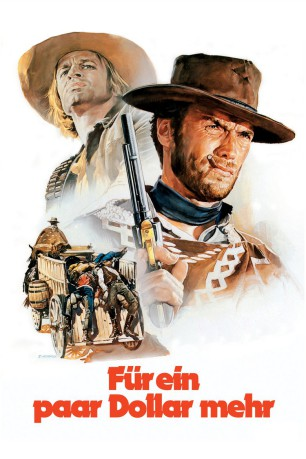
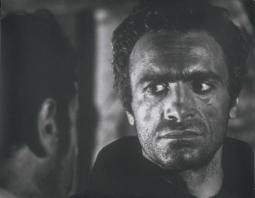

#2558 Für ein paar Dollar mehr
Alternativ: For a Few Dollars More (Englischer Titel)
 
 IMDB-Wertung: 8.3 / 10
IMDB-Wertung: 8.3 / 10  IMDB-TOP-Platzierung: 107
IMDB-TOP-Platzierung: 107  Metascore: 74
Metascore: 74 
Der 'Fremde' nennt sich nun Monco und verdient sein Geld als Kopfgeldjäger. Auf der Jagd nach einem Banditen kommt er einem anderen Kopfgeldjäger, Colonel Mortimer, zuvor. Nachdem sie sich zunächst als Konkurrenten gegenseitig einschüchtern, beschließen Mortimer und Monco gemeinsame Sache zu machen, als sie erfahren, dass El Indio, der meistgesuchte Verbrecher im westlichen Territorium, aus dem Gefängnis entflohen ist und auf seinen Kopf 10.000 Dollar ausgesetzt sind. Monco soll den Lockvogel spielen, indem er sich in Indios Bande einschmuggelt
Jahr: 1965
Dauer: 132 Minuten
FSK: 16
Land: Italien Studio: Constantin FilmTonspuren:
Untertitel:
Auflösung: 1080p (1920x816) Größe: 11161 MB
Genre: Western
Regisseur:  Sergio Leone
Sergio Leone
Drehbuch: Sergio Leone, Fulvio Morsella, Luciano Vincenzoni, Sergio Leone, Sergio Donati
Soundtrack: Ennio Morricone
Darsteller:
 Clint Eastwood als Monco
Clint Eastwood als Monco Lee Van Cleef als Col. Douglas Mortimer
Lee Van Cleef als Col. Douglas Mortimer- Gian Maria Volonté als El Indio, The Indian
 Mario Brega als Nino, Member of Indio's Gang
Mario Brega als Nino, Member of Indio's Gang-  Luigi Pistilli als Groggy, Member of Indio's Gang
 Aldo Sambrell als Cuchillio
Aldo Sambrell als Cuchillio Klaus Kinski als Juan Wild - The Hunchback
Klaus Kinski als Juan Wild - The Hunchback- Sergio Leone als Whistling Bounty Hunter , uncredited
- Benito Stefanelli als Luke 'Hughie'
- Luis Rodríguez als Manuel, Member of Indio's Gang
- Panos Papadopulos als Sancho Perez, Member of Indio's Gang
- Mara Krupp als Mary - Hotel Manager's Beautiful Wife
- Roberto Camardiel als Tucumcari station clerk
- Joseph Egger als Old Prophet
- Tomás Blanco als Tucumcari sheriff
- Lorenzo Robledo als Tomaso, Indio's Traitor
- Sergio Mendizábal als Tucumcari bank manager
- Dante Maggio als Carpenter in cell with El Indio
- Diana Rabito als Callaway's beautiful girl in tub
- Giovanni Tarallo als Santa Cruz telegraphist
- Mario Meniconi als Train Conductor
- Werner Abrolat als Slim, Member of Indio's Gang , uncredited
- Román Ariznavarreta als Half-Shaved Bounty Hunter , uncredited
 Frank Braña als Blackie, Member of Indio's Gang , uncredited
Frank Braña als Blackie, Member of Indio's Gang , uncredited José Canalejas als Chico, Member of Indio's Gang , uncredited
José Canalejas als Chico, Member of Indio's Gang , uncredited- Rosemary Dexter als Mortimer's Sister , uncredited
- Diana Faenza als Tomaso's Wife , uncredited
- Eduardo García als Member of Indio's Gang , uncredited
- Maurizio Graf als The Balladeer , uncredited
- Jesús Guzmán als Carpetbagger on Train , uncredited
- Peter Lee Lawrence als Mortimer's Brother-in-Law , uncredited
- Francesca Leone als Tomaso's Baby , uncredited
- Rafael López als (uncredited
- José Marco als 'Baby' Red Cavanaugh , uncredited
 Antonio Molino Rojo als Frisco, Member of Indio's Gang , uncredited
Antonio Molino Rojo als Frisco, Member of Indio's Gang , uncredited- José Félix Montoya als (uncredited
- Guillermo Méndez als White Rocks Sheriff , uncredited
- Nazzareno Natale als Paco - Member of Indio's Gang , uncredited
- Enrique Navarro als Sherrif of Tucumcari , uncredited
 Ricardo Palacios als Tucumcari Saloon Keeper , uncredited
Ricardo Palacios als Tucumcari Saloon Keeper , uncredited- Antonio Palombi als Bartender , uncredited
- Aldo Ricci als (uncredited
- Antoñito Ruiz als Fernando , uncredited
- Enrique Santiago als Miguel, Member of Indio's Gang , uncredited
- Carlo Simi als El Paso Bank Manager , uncredited
- José Terrón als Guy Calloway, Mortimer's 1st Criminal , uncredited
- Kurt Zips als Hotel Manager , uncredited
Datei: X:\HD-Western-Collections\Dollar-Trilogie\Für ein paar Dollar mehr (1965, FSK16, 1920x816).mkv seit 23.11.2015
Festplatte: HD Eastern+Western
 Alle Filme aus Gruppe 'HD-Western-Collections\Dollar-Trilogie'
Alle Filme aus Gruppe 'HD-Western-Collections\Dollar-Trilogie'